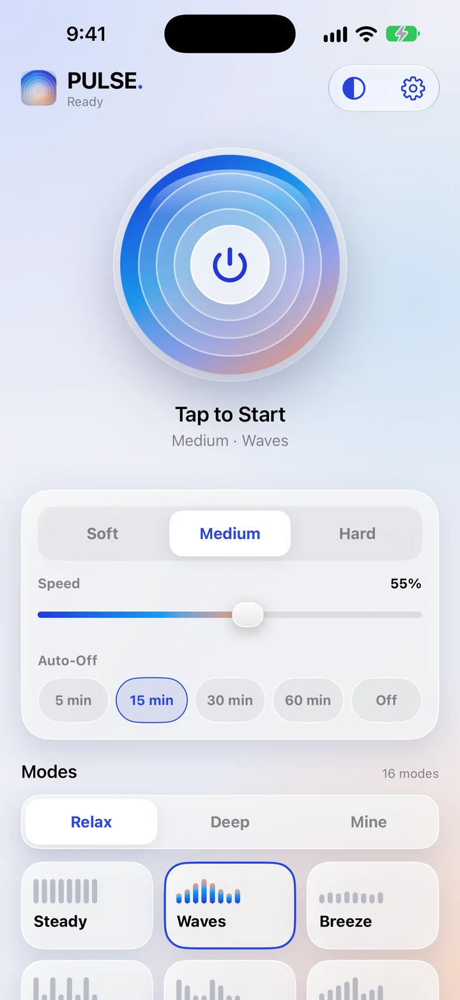

How PULSE turns your iPhone's Taptic Engine into a massager
· 4 min read · Essential Dev Team

Inside every recent iPhone is a small part called the Taptic Engine. It's the reason a keyboard tap or a toggle switch feels like a crisp little click instead of a buzz. Most apps use it for a split second at a time. PULSE uses it continuously, shaping it into rhythms you can actually feel as a massage.
What the Taptic Engine is
Older phones used a simple spinning weight that could only buzz. The Taptic Engine is a linear actuator: a small mass that moves back and forth very precisely, so it can start and stop almost instantly and play vibrations of different strengths. Apple gives apps access to it through a framework called Core Haptics, which lets an app describe a pattern — when each vibration starts, how long it lasts and how strong it is — and play it on the device.
From a tap to a rhythm
Every mode in PULSE is, at heart, a repeating pattern of vibration and pause, with the strength of each beat varying across the pattern. Change those ingredients and the feeling changes completely:
- Long vibrations, short pauses feel like a steady, deep rumble — think Steady or Hum.
- Short vibrations, longer pauses feel like tapping or kneading — think Pulse or Heartbeat.
- Beats that rise and fall in strength feel like waves rolling in — think Waves, Tide or Slow Build.
PULSE groups its 28 modes into two tabs. Relax holds 16 gentler rhythms, from Breeze to Big Cat. Deep holds 12 stronger, more varied ones, including the guided Journey, which moves through six stages — Settle, Flow, Ease, Rise, Deep and Rest — each with its own rhythm, over about seven minutes.
Intensity and speed
On top of the pattern, two controls change how it feels. Intensity (Soft, Medium or Hard) sets how strong each beat is. Speed stretches or compresses the timing, so the same mode can feel calm and slow or lively and quick. You can change both while a mode is playing, which makes it easy to dial in what feels right.
Why the screen stays on
iOS only lets apps play haptics while they are in the foreground. That's a sensible rule for battery life and privacy, and it means PULSE keeps the screen on during a session, and the vibration stops if you switch apps or lock the phone. If you don't feel anything at all, check that Settings › Sounds & Haptics › System Haptics is on, and note that Low Power Mode can weaken haptics.
What it is, and what it isn't
A phone is not a professional massage device, and PULSE doesn't pretend to be one. The Taptic Engine is small, so the vibration is best on areas where you can rest the phone flat: the tops of the shoulders, the side of the neck, the upper back, calves or the soles of the feet. Vibration strength also depends on your iPhone model and its settings. Long sessions can warm the phone and use battery, which is why PULSE has an auto-off timer.
And because everything happens on the device, PULSE needs no account, asks for no permissions, and sends nothing about you anywhere. It's just you, your phone, and a rhythm.
Not medical advice. PULSE is a relaxation app, not a medical device. This article is general information, not a substitute for professional care. Stop if anything feels uncomfortable, and ask a doctor first if you are pregnant, have a pacemaker or other implanted device, or have a medical condition.